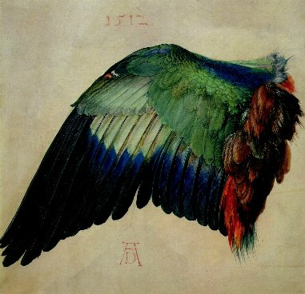

Graham Nelson

Fourth Edition 2001
The Inform Designer's Manual, Fourth Edition
Author: Graham Nelson
Editor: Gareth Rees
Proofreaders: Torbjörn Andersson, Toby Nelson, Andrew Plotkin
Printed edition managed by: David Cornelson
Cover: Wing of a Roller (watercolour and gouache on vellum, 1512),
Albrecht Dürer (1471–1528)
Inform, the program and its source code, its example games and documentation, including the text and typography of this book, are copyright © Graham Nelson 1993, 94, 95, 96, 97, 98, 99, 2000, 01, 02.
The Inform software may be freely distributed provided that: (a) distributed copies are not substantially different from those archived by the author, (b) this and other copyright messages are always retained in full, and (c) no profit is involved. The same conditions apply to distribution or conversion of any electronic form of this book which may be made available by the author. Exceptions to these conditions must be negotiated directly with the author.
A story file produced with the Inform system belongs to whoever wrote it and may be sold for profit if so desired, without the need for royalty payment, provided that it prints a game banner conforming to the standard library's banner at an early stage in play: in particular, this banner must contain the information that the story file was compiled by Inform, and the version numbers of compiler and library used.
The author assumes no liability for errors and omissions in this book, or for damages or loss of revenue resulting from the use of the information contained herein, or the use of any of the software described herein. Inform software is supplied "as is" and carries no warranty, actual or implied.
First edition September 1994
Second expanded edition October 1995
Third edition September 1996
Web edition with minor revisions May 1997
Fourth expanded edition May 2001: Release 4/2 (July 2001)
Published by The Interactive Fiction Library (IFLibrary.Org)
P.O. Box 3304, St. Charles, Illinois 60174
Printed in the United States of America
ISBN 0-9713119-0-0